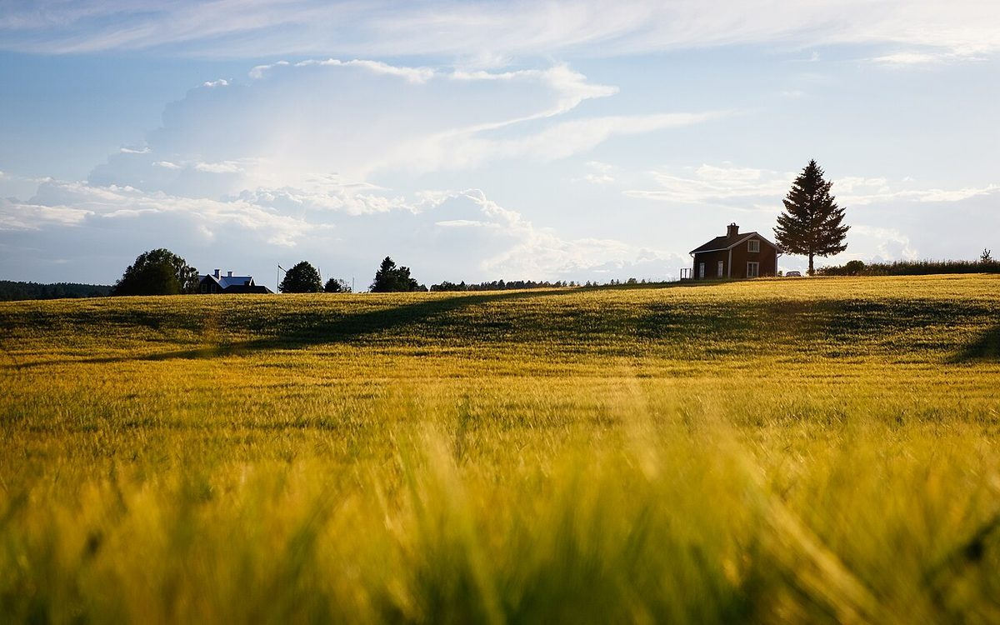
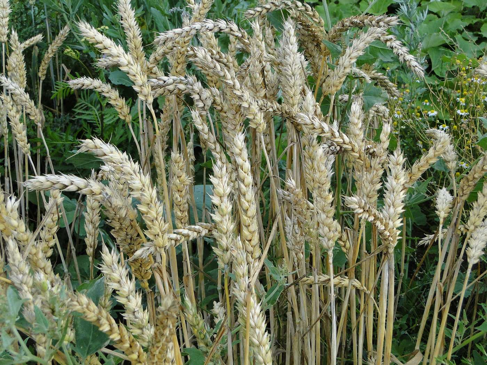
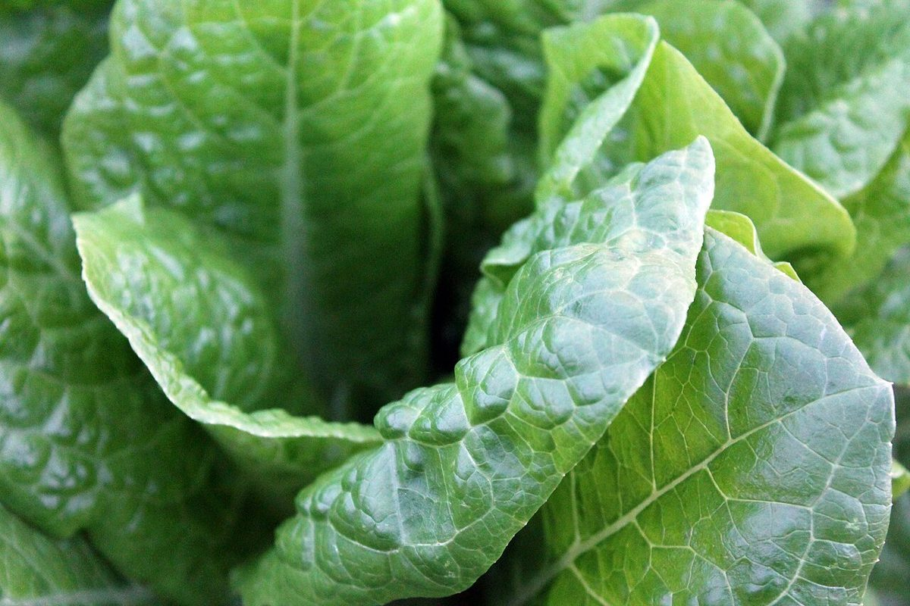

パン屋 / 長野県北佐久郡
農家のパン屋ちしゃぱん
パン屋「農家のパン屋 ちしゃぱん」のご案内ページです。営業時間やメニューなど、詳しいことは準備中。まずはInstagramをのぞいてみてください。
工程のながれ
五つの工程を、図の下に並べてみる
- 1とかす
- 2押し出す
- 3はさむ
- 4ふくらます
- 5冷やす
一般的なブロー成形の流れを、制作側が簡単に並べたものです。制作側の連想で、お店の理念・由来とは無関係です。実際の機械の仕様を示すものでもありません。
制作側の連想
ブロー成形機を、部位ごとの配置図にする
このサイトは、筒状の樹脂を型の中でふくらませてボトルをつくる「ブロー成形機」を横から見た図にして作りました。六つの部位に番号をふり、上の図と並べています。制作側の連想で、お店の理念・由来とは無関係です。実際の機械の仕様を示すものでもありません。
凡例
六つの部位
- 1ホッパー樹脂のつぶ(ペレット)を入れる、漏斗の形をした投入口。
- 2押出機回るスクリューで樹脂を温めながら、先へ送り出す筒。
- 3ダイヘッドとけた樹脂を、下向きの筒に整えて押し出す先端部分。
- 4パリソンダイから垂れ下がる、まだやわらかい筒状の樹脂。
- 5割り金型左右から閉じてパリソンをはさみ、形を決める型。
- 6ブローピン型の中へ空気を吹き込み、筒をふくらませる管。

写真(イメージ)
麦と粉と、葉の写真



写真はイメージです。お店のものではなく、お店で提供している商品を示すものでもありません。
ギャラリー(イメージ)
パンとコーヒー豆の写真


写真はパンとコーヒー豆のイメージです。お店のものではありません。
ご案内
お店のこと(確認できたものだけ)
| 所在地 | 〒389-0207 長野県北佐久郡御代田町馬瀬口277-2 |
|---|---|
| 電話 | 準備中 |
| 営業時間 | 準備中 |
| 定休日 | 準備中 |
| ご予約 | 準備中 |
| 駐車場 | 準備中 |
| SNS | Instagram @thisyapain |